Bonify
How Bonify took 95% of support tickets off the founders while holding a 4.9 customer rating on Shopify.

About Bonify
Bonify is a Shopify app development company based in the United States, founded and led by John Carbone. The team builds and maintains a suite of widely used Shopify apps including Custom Fields, Arigato Automation, Customer Account Fields, and Instasheets. The apps are known for their flexibility, automation depth, and the kind of intricate functionality that lets merchants run real business logic on top of their Shopify stores.
Bonify started as a web development firm. Under John's leadership, the company shifted focus to apps, betting that the real opportunity was in giving online retailers the tools to automate complex e-commerce operations themselves. That bet paid off. The apps built a loyal merchant base across the United Kingdom, Europe, North America, Asia Pacific, and beyond, with customers ranging from independent founders to multi-store operators.
Two things define Bonify culturally: a focus on building what customers actually need, and a willingness to keep solving the harder, weirder e-commerce problems other apps avoid. That shows up in the support inbox. A typical Bonify ticket involves API logic, Shopify quirks, custom workflows, and merchants who need someone to actually understand their setup before answering. It is not a place where scripted support survives long.
By 2020, Bonify's product range and customer base had outgrown what John and his cofounder Dan Pepin could handle alongside building and shipping software. That is when John and xFusion started working together.
“I forget they're technically not in-house. They truly are part of the Bonify team.”
Working with xFusion led to a monumental improvement in our customer experience. They found us the perfect reps with complete alignment to our mission, and they've handled the vast majority of our tickets while maintaining a 4.9 customer satisfaction score on Shopify since May 2020.
Customer satisfaction score on Shopify, sustained from May 2020 to present, while the xFusion team handled 26,436 tickets across the first three years of the partnership.
The challenge
Bonify's shift from web development to Shopify apps put the company on a different growth curve. New apps brought new merchants. New merchants brought tickets. And because Bonify's apps do real, technical work inside merchants' stores, the tickets were not the easy kind. They required someone who actually understood Shopify, automation logic, custom field structures, and the way real merchants try to bend an app to fit their workflow.
For a while, John and Dan handled it themselves. That was the only option. The work demanded technical depth, and they were the ones with the depth. But every hour they spent answering a ticket was an hour they were not shipping product, planning the next app, or thinking about where Bonify was headed.
The volume kept climbing. Live chat added another layer, with merchants expecting fast responses in real time. The founders were getting pulled out of strategic work, mid-thought, to handle support that had nothing to do with the next chapter of the company. Burnout was on the horizon, and the cost was visible in slipped product timelines.
Bonify had tried other support solutions before. None had worked. The agents could not get fluent in the technical layer, language barriers introduced friction merchants noticed, and the "set it and forget it" promise from outside vendors never matched reality. By 2020, John was looking for something different. Not a placement and a handoff. A real partner.
The solution
John brought xFusion in during the early summer of 2020. From the start, the engagement was structured around two assumptions: the support agents needed real technical depth in Bonify's product line, and the relationship needed to be managed end-to-end so the founders never had to babysit it.
xFusion recruited and placed two dedicated agents, Kenny and Patrick, both vetted through the TraitX Framework and supported by a dedicated account manager. The first weeks were spent on the product. Not generic onboarding. Specific, hands-on training in Custom Fields, Arigato Automation, and the rest of the Bonify catalog, plus the Shopify environment they sit inside. The goal was for Kenny and Patrick to know the apps the way John and Dan knew them.
xFusion also took over the operating layer that surrounds the agents. Recruiting, training, payroll, culture and engagement, performance management, and ongoing oversight all sat on the xFusion side. The Bonify team got the output: agents who showed up every day, knew the product, and responded to merchants with technical accuracy. They did not get a second set of management problems to solve.
“The most important thing is that if we do have an issue, if something comes up, I know that I can go to you guys and you're gonna make it right, and you're gonna make it right fast. I'm happy to be a referral for you.”
What made the partnership work was not just the talent. It was the willingness to keep adjusting. As Bonify shipped new app updates, the support team trained on them. As live chat volume grew, xFusion staffed and managed it. As John found new things he wanted to delegate, the relationship absorbed them.
Shoutouts to xFusion's team members from Bonify leadership
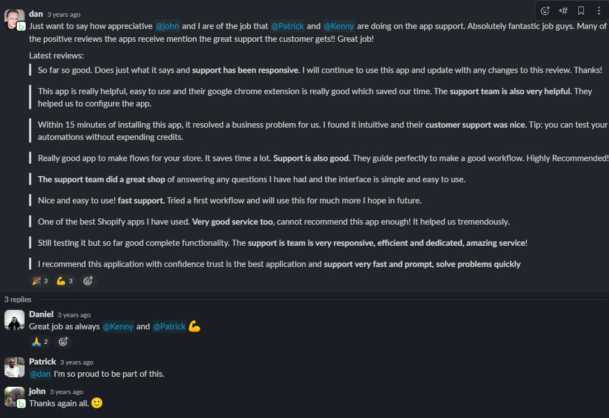
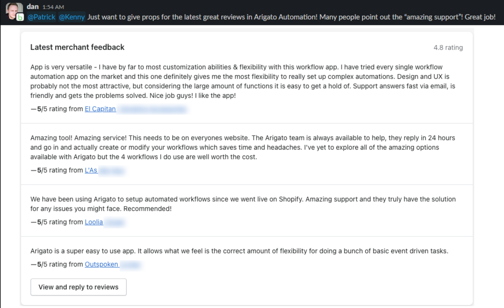
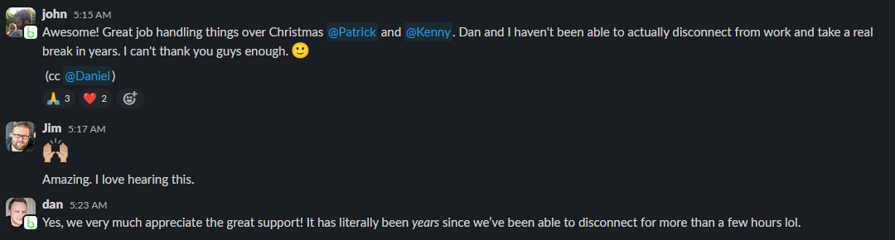
Shoutouts from Bonify customers about xFusion's team members
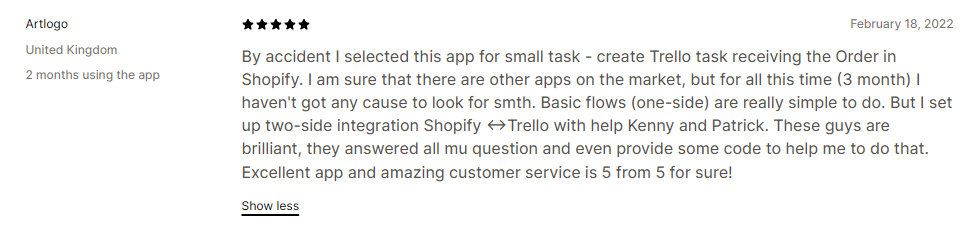
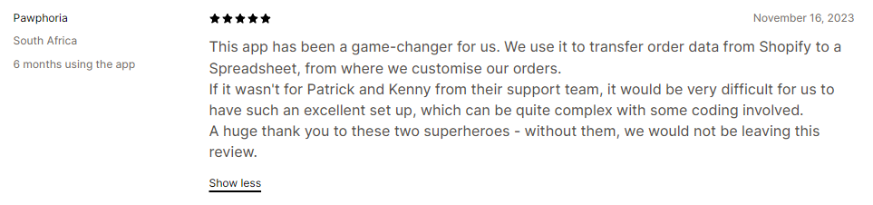
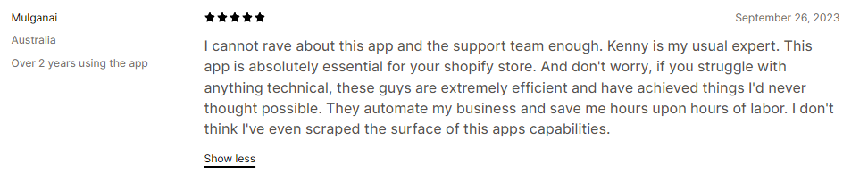
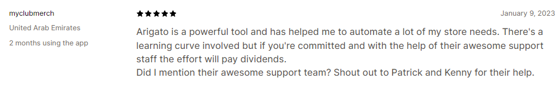
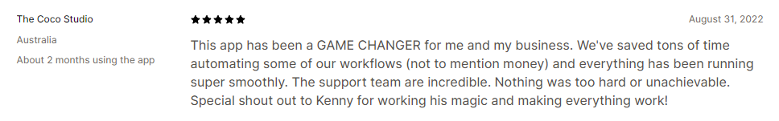
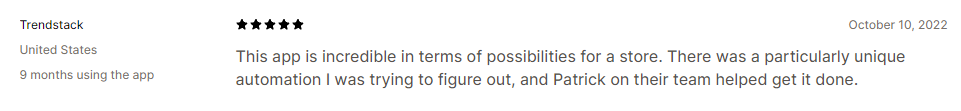
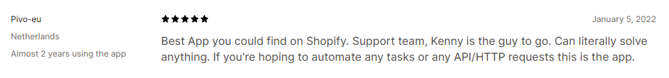
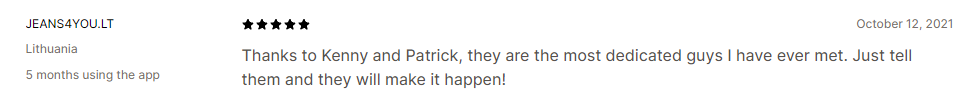
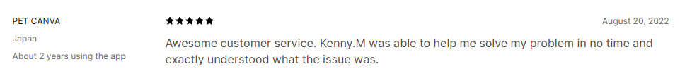
The results
Three years into the partnership, the numbers told a clear story. From May 2020 to May 2023, Kenny and Patrick handled 26,436 ticket replies. John and Dan handled 1,474 across the same window. That works out to roughly 4% of replies from John, 1.27% from Dan, and the remaining 95% from the xFusion team. The founders had reclaimed their inbox.
Customer satisfaction held at 4.9 on Shopify across the entire stretch. That score is the merchant-facing signal Bonify cares about most. It was sustained while ticket volume grew, while new apps shipped, and while live chat scaled. Quality did not drop as the workload moved off the founders. It improved.
Reply times dropped to roughly half of what John and Dan had been able to achieve. That was not from cutting corners. Kenny and Patrick handled tickets with a "replies to resolve" ratio in line with the founders, while moving faster on first response and overall reply time. The handle time data showed agents who were thorough and fast at the same time, which is the rare combination the support inbox actually rewards.
Live chat became a reliable channel rather than a fire drill. Average wait time settled at one minute and fifteen seconds. Average chat duration ran 45 minutes, with merchants getting actual problem-solving rather than canned answers. Across the chat history, the team handled 3,778 conversations and completed 3,262 of them, with each agent averaging 3.45 chats per day.
Beyond the metrics, the partnership did what John originally hoped. It gave him and Dan back the ability to disconnect. After years of being on call for their own product, both founders could take real breaks and trust that the support side of the business was in good hands. The reviews kept coming in praising Kenny and Patrick by name. The product roadmap that had been blocked by support overhead started moving again. The relationship is still going.
Want to see if we can help you too?
If your customer support is starting to slip, or you are about to lose the one person holding it together, we can help. We will recruit, vet, place, train, and manage a senior, AI-trained support agent for your business. You will work with them for 30 days before paying anything. If you are not happy, you walk away free.
Book a Discovery Call30 minutes. No commitment. No credit card. You'll talk directly with our founding team.